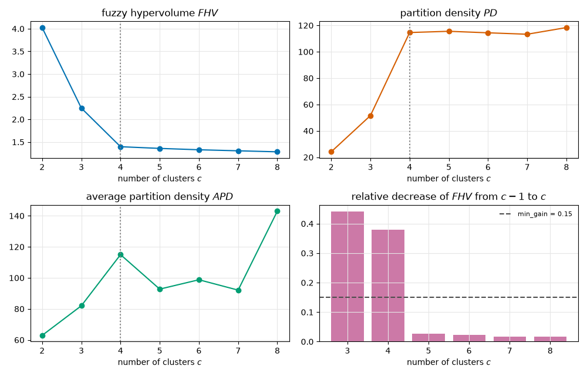
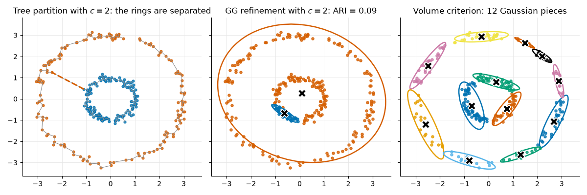
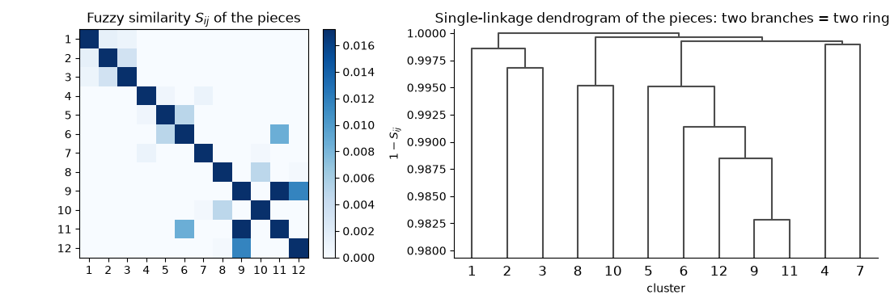

Note
Go to the end to download the full example code or to run this example in your browser via Binder.
Number of clusters: volume-based validity and fuzzy cluster similarity#
The hybrid MST–GG algorithm uses the fuzzy hypervolume both as its
splitting criterion and as a validity measure. This example looks at the
number of clusters from two sides. First, the number is given
(n_clusters=c), and the partitions obtained for a range of \(c\)
are compared by the volume-based indices of Gath and Geva from
fuzzyclust.validity (the fuzzy hypervolume \(FHV\), the
partition density \(PD\), and the average partition density
\(APD\)) and by the number the volume criterion picks on its own.
Second, the clusters are not Gaussian: two concentric rings are split
by the volume criterion into many small pieces, each well described by one
Gaussian. The fuzzy similarity of the refined clusters,
\(S_{ij}=\sum_k\min(\mu_{ik},\mu_{jk})/\sum_k\max(\mu_{ik},\mu_{jk})\),
drawn as a dendrogram, shows which pieces belong together; this is the
analysis step the paper proposes for merging and for visualizing the
result.
import matplotlib.pyplot as plt
import numpy as np
from sklearn.metrics import adjusted_rand_score
from fuzzyclust import validity
from fuzzyclust.datasets import make_fuzzy_blobs, make_rings
from fuzzyclust.graph import MSTClustering, plot_mst, plot_similarity_dendrogram
from fuzzyclust.plotting import PALETTE, plot_clusters, plot_covariance_ellipses
Scanning the number of clusters with volume-based indices#
The data are four Gaussian groups of different sizes. For every \(c\),
the tree is cut and split down to \(c\) clusters (undoing coarse cuts
or forcing volume splits as needed), and GG refines the partition; the
indices are computed from the refined memberships and centers.
\(FHV\) falls steeply up to the true number and flattens there,
\(PD\) rises steeply and then stays flat, and \(APD\) peaks.
Splitting a compact group, however, produces small, dense pieces, so the
extrema of the density indices beyond the knee cannot be trusted; the
knee carries the information. The relative decrease of \(FHV\) from
\(c-1\) to \(c\) is the quantity that the algorithm’s own stopping
rule (min_gain) examines, and the automatic run (n_clusters=None)
stops where it drops below 15 %.
X, y = make_fuzzy_blobs(n_clusters=4, n_samples_per_cluster=100, spread=0.6, random_state=0)
# [snippet:scan]
cs = range(2, 9)
rows = []
for c in cs:
model = MSTClustering(n_clusters=c, random_state=0).fit(X)
U, V = model.membership_, model.cluster_centers_
rows.append((
validity.fuzzy_hypervolume(X, U, V),
validity.partition_density(X, U, V),
validity.average_partition_density(X, U, V),
adjusted_rand_score(y, model.labels_),
))
rows = np.array(rows)
auto = MSTClustering(random_state=0).fit(X)
print("volume criterion alone picks", auto.n_clusters_, "clusters")
# [/snippet:scan]
fig, axes = plt.subplots(2, 2, figsize=(10, 6.4))
axes = axes.ravel()
names = ("fuzzy hypervolume $FHV$", "partition density $PD$", "average partition density $APD$")
for ax, j, name in zip(axes[:3], range(3), names, strict=True):
ax.plot(list(cs), rows[:, j], "o-", color=PALETTE[j])
ax.axvline(auto.n_clusters_, color="0.5", ls=":")
ax.set_xlabel("number of clusters $c$")
ax.set_title(name)
ax.grid(True, color="0.9")
gain = -np.diff(rows[:, 0]) / rows[:-1, 0]
axes[3].bar(list(cs)[1:], gain, color=PALETTE[3])
axes[3].axhline(0.15, color="0.3", ls="--", label="min_gain = 0.15")
axes[3].set_xlabel("number of clusters $c$")
axes[3].set_title("relative decrease of $FHV$ from $c-1$ to $c$")
axes[3].legend(frameon=False, fontsize=8)
axes[3].grid(True, color="0.9")
plt.tight_layout()
print(" c FHV PD APD ARI")
for c, (fhv, pd_, apd, ari) in zip(cs, rows, strict=True):
print(f"{c:2d} {fhv:6.3f} {pd_:6.1f} {apd:6.1f} {ari:5.2f}")

volume criterion alone picks 4 clusters
c FHV PD APD ARI
2 4.026 24.1 62.9 0.33
3 2.249 51.6 82.0 0.71
4 1.396 114.6 115.0 1.00
5 1.359 115.5 92.7 0.99
6 1.329 114.4 98.8 0.98
7 1.306 113.3 92.1 0.96
8 1.283 118.4 143.0 0.94
The scan of fuzzyclust.validity.scan_n_clusters() also works with
this estimator, because MSTClustering accepts n_clusters like
every other clusterer of the toolbox:
table = validity.scan_n_clusters(MSTClustering(random_state=0), X, range(2, 7), indices=("FHV", "PD", "APD", "XB"))
print(table.round(3))
print("suggested:", validity.suggest_n_clusters(table).to_dict())
FHV PD APD XB
n_clusters
2 4.026 24.092 62.894 0.282
3 2.249 51.582 82.000 0.076
4 1.396 114.590 114.971 0.025
5 1.359 115.531 92.747 0.234
6 1.329 114.379 98.776 0.288
suggested: {'FHV': 6, 'PD': 5, 'APD': 4, 'XB': 4}
Non-Gaussian clusters: pieces and their similarity#
The data are two concentric rings. With n_clusters=2 the tree
partition alone separates the rings perfectly, but a GG refinement of two
clusters fails: one Gaussian per ring cannot describe a hollow shape, and
the inner ring is absorbed by the broad outer Gaussian. Without a
prescribed number, the volume criterion splits the rings into short arcs
that are approximately Gaussian, until max_clusters (here 12) is
reached, and the GG refinement of the pieces is faithful.
This corresponds to the “clusters with convex shapes approximated by a
mixture of Gaussians” of the paper.
Xr, yr = make_rings(n_samples_per_ring=150, radii=(1.0, 3.0), noise=0.1, random_state=0)
# [snippet:rings]
two_tree = MSTClustering(n_clusters=2, refine=None).fit(Xr)
two_gg = MSTClustering(n_clusters=2, random_state=0).fit(Xr)
pieces = MSTClustering(max_clusters=12, random_state=0).fit(Xr)
print(f"rings: tree partition ARI {adjusted_rand_score(yr, two_tree.labels_):.2f}, "
f"GG refinement of 2 clusters ARI {adjusted_rand_score(yr, two_gg.labels_):.2f}, {pieces.n_clusters_} pieces")
# [/snippet:rings]
fig, axes = plt.subplots(1, 3, figsize=(12, 4.0), sharex=True, sharey=True)
plot_mst(Xr, two_tree, ax=axes[0], legend=False)
axes[0].set_title("Tree partition with $c=2$: the rings are separated")
plot_clusters(Xr, two_gg.labels_, two_gg.cluster_centers_, ax=axes[1], legend=False)
plot_covariance_ellipses(two_gg.cluster_centers_, two_gg.covariances_, ax=axes[1])
axes[1].set_title(f"GG refinement with $c=2$: ARI = {adjusted_rand_score(yr, two_gg.labels_):.2f}")
plot_clusters(Xr, pieces.labels_, pieces.cluster_centers_, ax=axes[2], legend=False)
plot_covariance_ellipses(pieces.cluster_centers_, pieces.covariances_, ax=axes[2])
axes[2].set_title(f"Volume criterion: {pieces.n_clusters_} Gaussian pieces")
plt.tight_layout()

rings: tree partition ARI 1.00, GG refinement of 2 clusters ARI 0.09, 12 pieces
The fuzzy similarity of the pieces reveals the rings. Neighboring arcs of the same ring share samples with intermediate memberships and are similar; arcs of different rings are not. GG memberships are nearly crisp, so all similarities are small (the dendrogram of the paper also lies between 0.96 and 1), but their order carries the structure. The single-linkage dendrogram of \(1-S_{ij}\) has two main branches, and cutting it into two groups merges the pieces back into the rings.
# [snippet:similarity]
from scipy.cluster.hierarchy import fcluster, linkage
from scipy.spatial.distance import squareform
S = pieces.cluster_similarity_
Z = linkage(squareform(1.0 - S, checks=False), method="single")
piece_to_ring = fcluster(Z, 2, criterion="maxclust") - 1
merged = piece_to_ring[pieces.labels_]
print(f"ARI of the two merged groups against the rings: {adjusted_rand_score(yr, merged):.2f}")
# [/snippet:similarity]
ring_of_piece = np.array([np.bincount(yr[pieces.labels_ == j]).argmax() for j in range(pieces.n_clusters_)])
off = ~np.eye(len(S), dtype=bool)
same = S[(ring_of_piece[:, None] == ring_of_piece[None, :]) & off]
other = S[ring_of_piece[:, None] != ring_of_piece[None, :]]
print(f"largest similarity between pieces of the same ring: {same.max():.4f}, of different rings: {other.max():.2e}")
fig, axes = plt.subplots(1, 2, figsize=(11, 3.8), gridspec_kw={"width_ratios": [1, 1.4]})
im = axes[0].imshow(S, cmap="Blues", vmin=0, vmax=S[~np.eye(len(S), dtype=bool)].max())
axes[0].set_title("Fuzzy similarity $S_{ij}$ of the pieces")
axes[0].set_xticks(range(len(S)))
axes[0].set_xticklabels(range(1, len(S) + 1))
axes[0].set_yticks(range(len(S)))
axes[0].set_yticklabels(range(1, len(S) + 1))
plt.colorbar(im, ax=axes[0], fraction=0.046)
plot_similarity_dendrogram(S, ax=axes[1])
axes[1].set_title("Single-linkage dendrogram of the pieces: two branches = two rings")
plt.tight_layout()

ARI of the two merged groups against the rings: 1.00
largest similarity between pieces of the same ring: 0.0172, of different rings: 7.03e-06
Parameter study: the fuzziness of the refinement and the size of the pieces#
The similarity is computed from the GG memberships, so it depends on the
exponent \(m\). A crisper refinement (small \(m\)) makes all
pieces dissimilar, whereas a fuzzier one lets neighboring arcs overlap and
raises the similarities; the merge into two groups stays correct in both
cases. The number of pieces follows max_clusters and min_gain.
print(" m max S(same ring) max S(other ring) ARI after merging to 2")
for m in (1.5, 2.0, 3.0, 4.0):
model = MSTClustering(max_clusters=12, m=m, random_state=0).fit(Xr)
S_m = model.cluster_similarity_
rp = np.array([np.bincount(yr[model.labels_ == j]).argmax() for j in range(model.n_clusters_)])
same_m = S_m[(rp[:, None] == rp[None, :]) & ~np.eye(len(S_m), dtype=bool)]
other_m = S_m[rp[:, None] != rp[None, :]]
Zm = linkage(squareform(1.0 - S_m, checks=False), method="single")
ari_m = adjusted_rand_score(yr, (fcluster(Zm, 2, criterion="maxclust") - 1)[model.labels_])
print(f"{m:3.1f} {same_m.max():14.4f} {other_m.max():15.2e} {ari_m:8.2f}")
for max_c, gain in ((6, 0.15), (12, 0.15), (20, 0.15), (20, 0.4)):
model = MSTClustering(max_clusters=max_c, min_gain=gain, refine=None).fit(Xr)
print(f"max_clusters={max_c:2d}, min_gain={gain:.2f}: {model.n_clusters_} pieces")
m max S(same ring) max S(other ring) ARI after merging to 2
1.5 0.0069 1.96e-09 1.00
2.0 0.0172 7.03e-06 1.00
3.0 0.0313 2.48e-04 1.00
4.0 0.0498 1.14e-03 1.00
max_clusters= 6, min_gain=0.15: 6 pieces
max_clusters=12, min_gain=0.15: 12 pieces
max_clusters=20, min_gain=0.15: 20 pieces
max_clusters=20, min_gain=0.40: 18 pieces
Take-away. When the number of clusters is given, MSTClustering
cuts and splits the tree down to it, so the volume-based indices of Gath
and Geva can be scanned over \(c\) exactly as for any other fuzzy
clusterer. Their knee, the point where a further split no longer reduces
the total volume substantially, is the number the volume criterion picks
on its own, whereas the extrema of the density indices are misled by
small dense fragments. When the groups are not Gaussian, the result
should be read hierarchically. The algorithm delivers Gaussian pieces,
and the fuzzy similarity of the pieces (a Jaccard ratio of the membership
columns) organizes them into a dendrogram whose main branches are the
nonconvex groups. The exponent \(m\) of the refinement controls how
much neighboring pieces overlap and thus how informative the similarity
is.
Total running time of the script: (0 minutes 1.493 seconds)